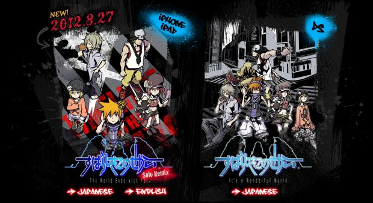
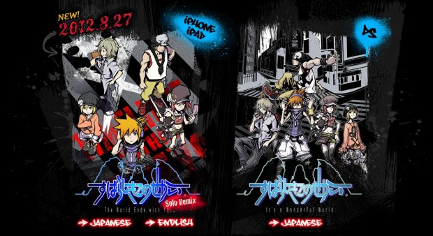

As of October 2018, there are currently three versions of the game available to purchase and play. The first is obviously the original for Nintendo DS released in 2007, the second is the the mobile phone version released in 2012, and the final definitive version is the Nintendo Switch version released in 2018. Naturally since these games are on different platforms, gameplay had to be altered greatly to accomadate each device. In the mobile version, you lose the ability to control your partner directly in battle, and instead can only use them for a set amount of time during battles. This feature carries over to the switch version, however if you play the game in wireless joycon mode, you can activate co-op mode and once again gain direct control of your partner. The main difference between controlling your partner in the DS version and the Nintendo Switch version, is that your partner no longer takes damage from enemies in while in co-op mode, and the special meter for fusion attacks is charged by targeting the same enemy at once as opposed to fufilling specific conditions during battle. Of course, the mobile and switch version also enjoy updated visuals and are also easier to find since the games can be purchased and played electronically instead of through game cartridge alone.
| DS Version | Mobile Version | Switch Version |
|---|---|---|
| Charming yet dated pixel graphics. | Standard phone graphics. | HD Graphics both docked and undocked. |
| Full control of Neku and his partner during battle. | Limited control for partner during battle. | Can only control partner fully in co-op mode. |
| Kind of a rare game to find nowadays. | Available on Google Play and App Store. | Available on Nintendo eShop. |